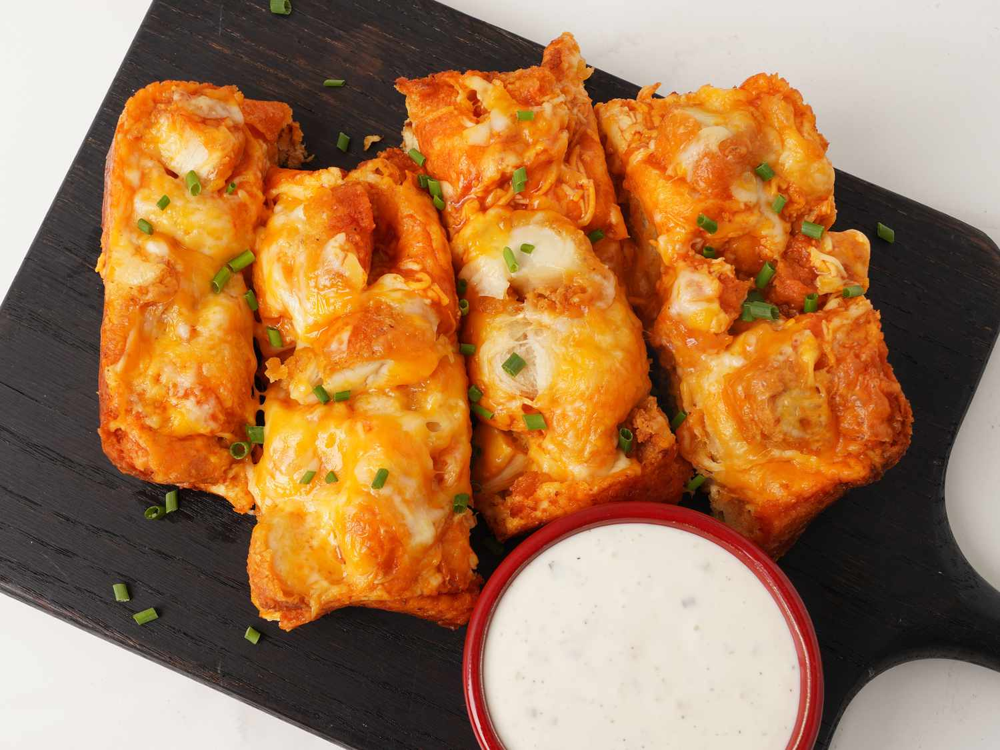

Buffalo Chicken Breadsticks

Description
A recipe for making buffalo chicken breadsticks. These Buffalo chicken breadsticks are a new—and super easy—way to serve up a party favorite. Creamy, spicy Buffalo chicken dip is baked on top of easy crescent roll dough bread. And the ranch dressing dunk tames the heat.
Ingredients
- 1 tablespoon olive oil
- 1 (8 ounce) can crescent roll dough
- 4 pieces fried chicken strips, cut into 1/2-inch pieces
- 1/4 cup Buffalo sauce
- 1 cup shredded Cheddar Jack cheese blend
- 2 green onions, finely chopped, or as needed for garnish (optional)
- 1/4 cup ranch dressing, or as needed
Directions
- Gather all ingredients.
- Preheat the oven to 400 degrees F (200 degrees C). Brush oil evenly along bottom and sides of a bread loaf pan.
- Remove crescent dough from the can and slice the whole roll of dough in half lengthwise. Place dough, cut sides down, into prepared pan, pressing it down slightly. Top dough evenly with chicken and drizzle evenly with Buffalo sauce. Sprinkle cheese evenly over the top.
- Bake in the preheated oven until bubbly and golden brown around the edges, 15 to 18 minutes. Carefully remove loaf from the pan onto a cutting board and slice across the loaf into 8 pieces. Sprinkle with green onions, and serve with ranch dressing.
- Serve and enjoy!